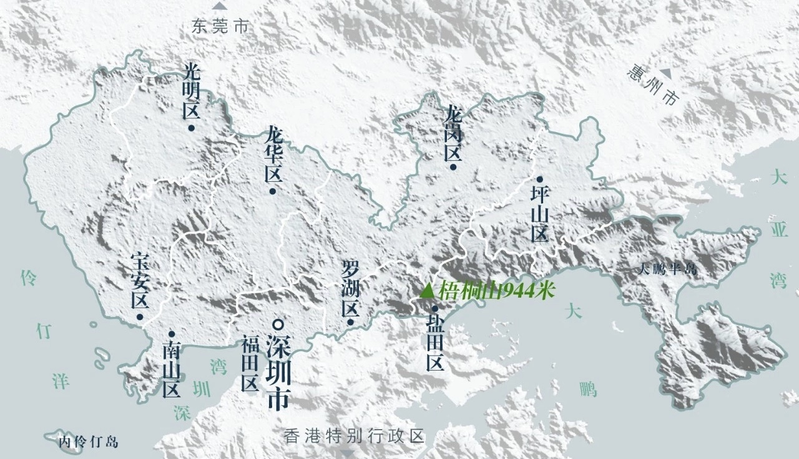
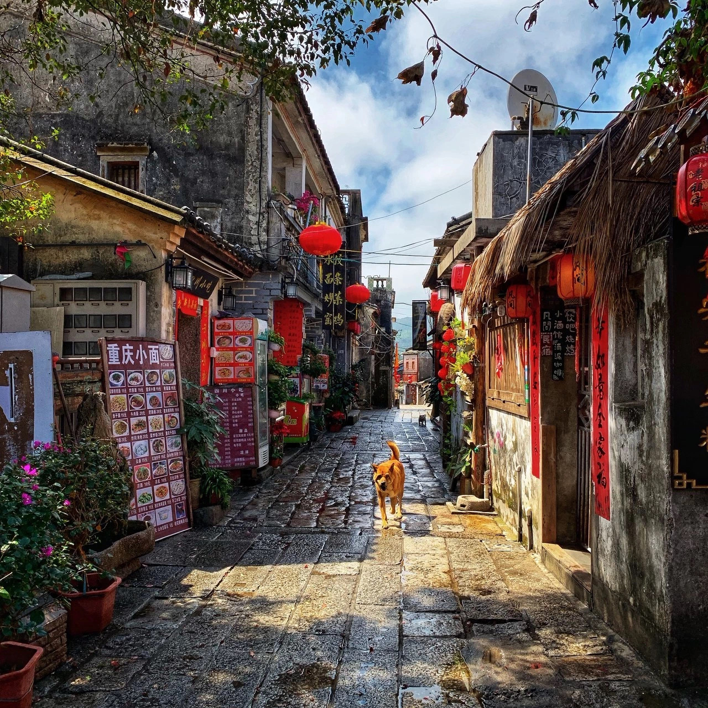
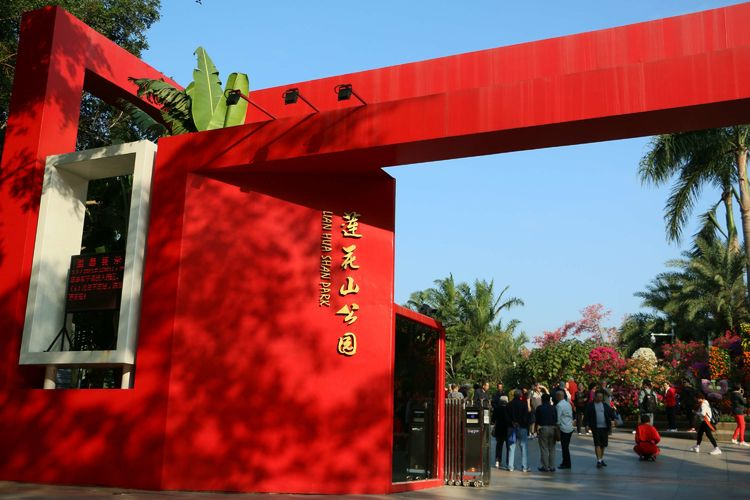
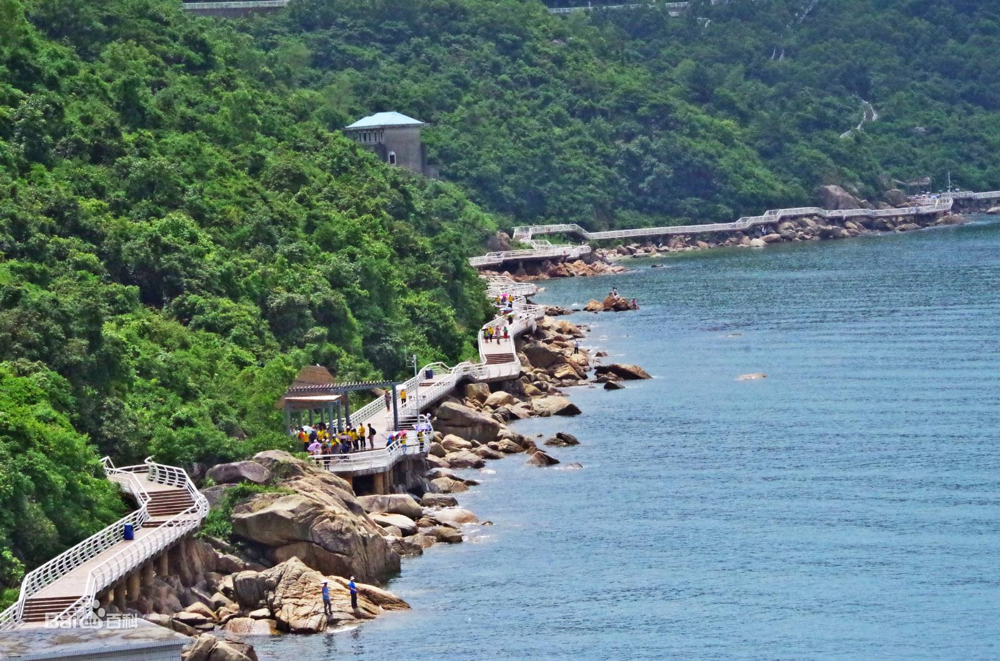
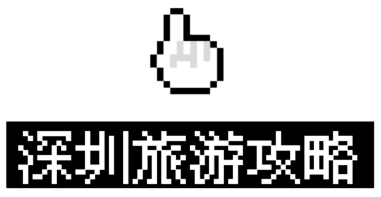

大鹏所城
位于深圳市东部龙岗区大鹏镇的大鹏所城，全称“大鹏守御千户所城”，为抗击倭寇而设立，占地11万平方米，始建于明洪武二十七年（1394年），是深圳迄今为止唯一的国家级重点文物保护单位。

莲花山公园
莲花山位于深圳市中心区北端，因山形似莲花而得名。山顶广场建有邓小平塑像，可以俯看中心区全貌。莲花山公园占地面积194公顷，南临红荔路，北到莲花路，东起彩田路，西至新洲路。莲花山公园东、南、西、北都有入口，其中，南面入口是主入口。

大小梅沙
大小梅沙，又称梅沙踏浪，由大梅沙和小梅沙组成，是“鹏城十景”之一，是一个素有"东方夏威夷"之美誉的著名海滨旅游景区，位于广东省深圳市盐田区。小梅沙位于深圳东部大鹏湾，大梅沙海滨公园，位于深圳东部大鹏湾，盐田港与小梅沙之间。
